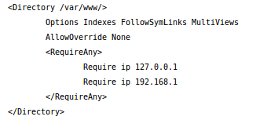
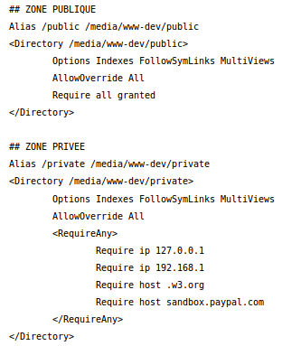

ISN Δ
ISN Δ
« Votre travail fait la différence ! »
 ISN Δ
ISN Δ
« Votre travail fait la différence ! »
C'est un serveur Web complet couplé avec php et mysql.
Je me sers de la doc Ubuntu pour installer les paquets nécessaires.
J'installe le serveur avec la méthode recommandée pour Ubuntu 16.04:
apt://apache2,php,mysql-server,libapache2-mod-php,php-mysql
Pour l'heure je n'ai pas besoin vraiment de ce service puisque je fais seulement des pages html basiques, mais ça pourra toujours servir plus tard.
Il faudra que je teste l'utilisation de scripts en Python plutôt qu'en php : ça doit être faisable (à creuser un jour...).
Après l'installation, j'ouvre "localhost" dans Firefox, et ça marche : "It works !"
L'étape d'après est la configuration d'un répertoire de travail. Je m'aide à nouveau de la
doc Ubuntu
J'ai ouvert avec les droits root (sudo gedit) le fichier :
/etc/apache2/sites-available/000-default.conf
Et j'ai ajouté en dessous de la ligne "DocumentRoot /var/www" les lignes

Puis je tape les 3 commandes :
(il faudra que je creuse pour mettre un autre repertoire : edit-MAJ : c'est fait, voir à la fin de cette page !)
J'ai ouvert toujours avec les droits root (sudo gedit) le fichier :
/etc/apache2/sites-available/000-default.conf
Et j'ai ajouté en dessous de la zone "Directory /var/www…./Directory" les lignes

Puis taper les 3 commandes qui créent des liens sympbolique du répertoire var/www/html vers media/www-dev :
Je n'ai pas fait la manip concernant l'erreur 403.
Finalement je redémarre le serveur pour tout prendre en considération :